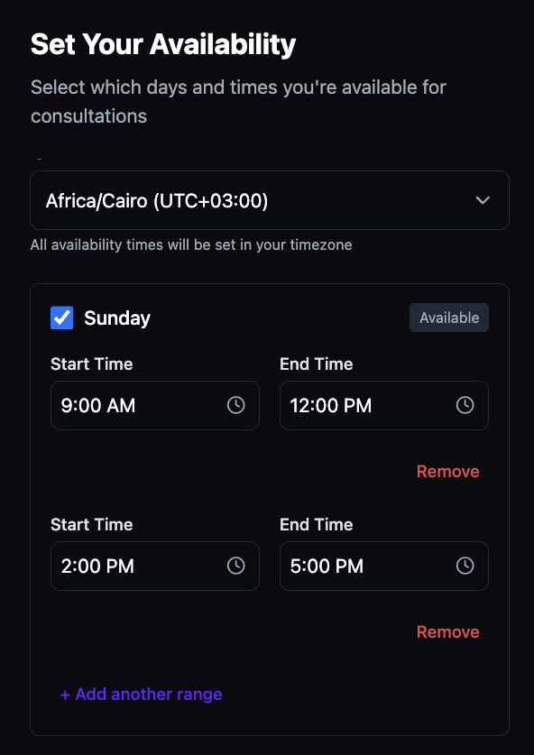
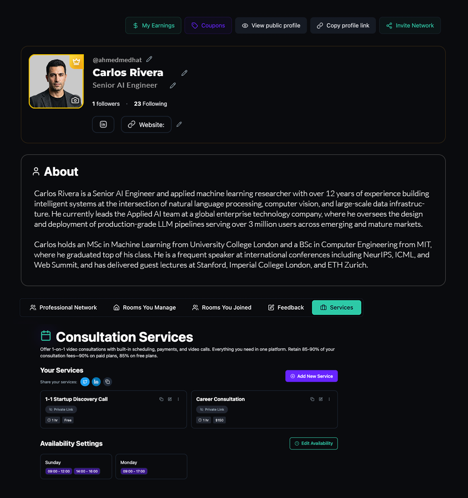

Define what you offer in one form.
Create consultation services with a title, description, and duration. Offer them free or set a price — toggle between a complimentary discovery call and a paid deep-dive without creating separate tools or pages. Each service lives on the expert's profile, ready to accept bookings.
- Free or paid — toggle pricing on or off per service. Run a free intro call alongside a paid strategy session.
- Flexible duration — set each service to match its format: 30-minute check-ins, 60-minute deep dives, or custom lengths.
- Unlimited services — create as many service types as your experts need.

Set your hours once. The platform handles the rest.
Experts set their weekly availability by day and time range, in their own timezone. Add multiple ranges per day to block out breaks. Clients see only the available slots — no back-and-forth scheduling emails, no calendar sync required.
- Timezone-aware — experts set availability in their timezone; clients see times in theirs.
- Multiple time ranges — split a day into morning and afternoon blocks to protect breaks.
- Day-by-day control — toggle each day on or off independently.

Control exactly who finds each service.
Three visibility levels give experts precise control over who can discover and book their services. Run a public offering alongside a private service reserved for specific clients — from the same dashboard, with no additional setup.
- Public — anyone can find and book the service through search and discovery.
- Profile — only visible on the expert's profile page. Not searchable.
- Private — only accessible via direct link. Shared selectively with specific clients.

Price in USD, EGP, or both.
Set consultation pricing in one currency or two. Clients pay in the currency that fits them — no currency conversion plugins, no regional payment workarounds. The pricing model adapts to your deployment's market without any external configuration.
- Dual currency — USD and EGP pricing on the same service, set independently.
- Client-side selection — the client pays in whichever currency suits them at checkout.
- Automatic collection — payments are processed at booking. No invoices. No chasing.

Every request, reviewed and responded to in one place.
When a client books a consultation, the request appears in the expert's Client Requests tab with full details — service, date, time, and the client's message. Accept with a personalized response and the session page is created automatically. Decline with a note and the client is notified instantly.
- Accept or decline — respond to each request with a personal message visible to the client.
- Auto-generated session — accepted requests create a session page and Add to Calendar link.
- Status tracking — Pending, Accepted, and Rejected statuses visible at a glance.

Track every consultation you've booked, too.
The consultation flow works both ways. When a user books a session with another expert, it appears in their My Bookings tab with full details and real-time status updates. Accepted bookings surface session links and calendar integration — no separate tracking tool needed.
- Two-way visibility — experts manage incoming requests; clients track outgoing bookings.
- Real-time status — see the moment an expert accepts or declines your request.
- Session access — accepted bookings link directly to the session page and calendar event.

Earn from expertise. Get paid directly.
Every paid consultation flows into the expert's earnings dashboard — total earnings, available balance, pending payouts, and completed transfers in one view. Connect Stripe once and payouts go directly to the bank account. No manual invoicing. No payment reconciliation.
- Earnings dashboard — Total Earnings, Available for Payout, Pending, and Completed in real time.
- One-time Stripe setup — connect once, receive payouts automatically to your bank account.
- Revenue share — experts retain 85–90% of every consultation fee.

Share your services where your audience already is.
Every expert's services page includes built-in share buttons for X, LinkedIn, and a direct link copy. No separate landing page builder. No link-in-bio tool. The consultation profile is the landing page — share it directly from the dashboard.
- One-click sharing — share to X, LinkedIn, or copy the direct link from the services dashboard.
- Profile is the landing page — clients land on the expert's profile, see services, and book directly.
- Public profile link — copy and share your profile URL anywhere to drive bookings.
